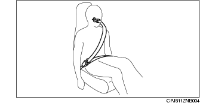
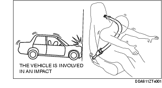
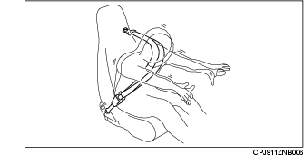

Load limiter retractor construction/operation
1. Initial state

2. ELR operation
When the force of impact is transfered to the belt, the retractor changes to the ELR condition, locking the belt and securing the passenger's body.

3. Load limiter operation
After locking, if the force of impact transferred to the belt is strong enough to cause injury to the chest of the occupant, an adequate amount of belt is released to absorb the load applied to the chest.
